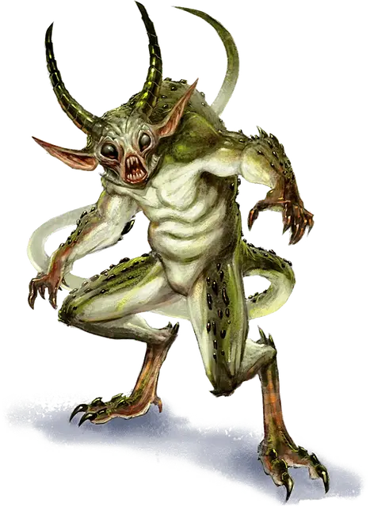

Квазит
Quasit
Крошечное Исчадие (Демон, Перевертыш), хаотично-злое

Класс Доспеха 13
Хиты 7 (3к4)
Скорость 40 футов
| мод | спас | ||
|---|---|---|---|
| СИЛ | 5 | −3 | −3 |
| ЛОВ | 17 | +3 | +3 |
| ТЕЛ | 10 | +0 | +0 |
| мод | спас | ||
|---|---|---|---|
| ИНТ | 7 | −2 | −2 |
| МДР | 10 | +0 | +0 |
| ХАР | 10 | +0 | +0 |
Навыки Скрытность +5
Сопротивление урону огонь, холод, электричество; дробящий, колющий, рубящий от немагических атак
Иммунитет к урону яд
Иммунитет к состояниям отравление
Чувства тёмное зрение 120 футов, пассивное Восприятие 10
Языки Общий, Бездны
Опасность 1 (200 опыта)
Бонус мастерства +2
Особенности
Перевертыш. Квазит может действием принять звериный облик, напоминающий летучую мышь (скорость 10 футов летая 40 футов), многоножку (40 футов, лазая 40 футов), или жабу (40 футов, плавая 40 футов), или принять свой истинный облик. Во всех обликах его характеристики остаются теми же самыми, исключая указанные изменения скорости. Все несомое и носимое им снаряжение не превращается. Он принимает свой истинный облик, если умирает.
Сопротивление магии. Квазит совершает с преимуществом спасброски от заклинаний и прочих магических эффектов.
Вариант: Фамильяр квазит. Смертные заклинатели, которые хотят фамильяра с другого плана, считают квазита легким для призыва и служения. Квазиты — раболепные слуги. Они великолепно служат своим хозяевам, подвигая смертных на все большее зло и хаос. Такие квазиты обладают следующей особенностью:
Фамильяр. Квазит может служить другому существу фамильяром, создав телепатическую связь с желающим того хозяином. Пока они связаны, хозяин может ощущать то же, что и квазит, пока они находятся в пределах мили друг от друга. Пока квазит находится в пределах 10 футов от хозяина, на хозяина распространяется особенность квазита Сопротивление магии. В любое время и по любой причине квазит может прекратить службу, оборвав телепатическую связь.
Действия
Когти (в зверином облике Укус). Рукопашная атака оружием: +4 к попаданию, досягаемость 5 футов, одна цель. Попадание: Колющий урон 5 (1к4 + 3), и цель должна преуспеть в спасброске Телосложения Сл 10, иначе получит урон ядом 5 (2к4) и станет отравленной на 1 минуту. Цель может повторять этот спасбросок в конце каждого своего хода, оканчивая эффект на себе при успехе.
Испуг (1/день). Одно существо на выбор квазита в пределах 20 футов от него должно преуспеть в спасброске Мудрости Сл 10, иначе станет испуганным на 1 минуту. Цель может повторять этот спасбросок в конце каждого своего хода, с помехой, если квазит находится в пределах линии обзора, оканчивая эффект на себе при успехе.
Невидимость. Квазит магическим образом становится невидимым, пока не атакует или не использует Испуг, или пока не окончится его концентрация (как при концентрации на заклинании). Все снаряжение, которое квазит несет или носит, становится невидимым вместе с ним.
Описание
Квазиты водятся на Нижних Планах. Физически слабые, они держатся в тени, чтобы плести интриги и ложь. Более мощные демоны используют квазитов для почтовых пересылок и шпионажа, когда не пожирают их и не растаскивают их друг от друга, чтобы скоротать время.
Квазит может предстать в животном облике, но в истинном виде он выглядит как 2-футовый зеленый гуманоид с колючим хвостом и рогами. Когти на руках и ногах квазита содержат раздражающий яд. Нападая, он предпочитает быть невидимым.
См. дополнительно статью: "Бестиарий: Демоны"